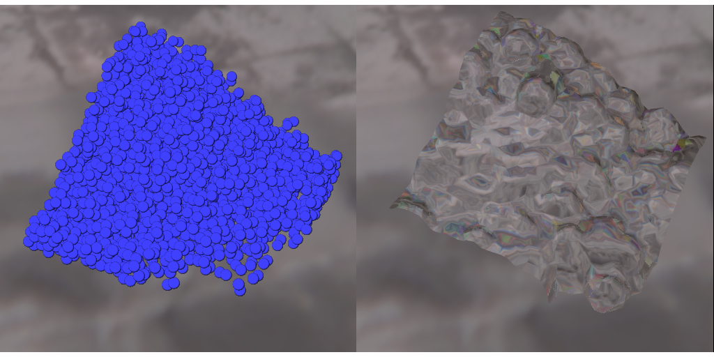

... but I can’t call ode113 in C in parallel (or can I?)
A simple serial simulation
Maybe a fixed step leapfrog will do?
npts = 100;
steps_per_pt = 10;
dt = tfinal/(steps_per_pt*(npts-1));
xout = zeros(2*n, npts);
xout(:,1) = x;
for i = 1:npts-1
for ii = 1:steps_per_pt
x = x + v*dt;
a = fnbody(x, m, g);
v = v + a*dt;
end
xout(:,i+1) = x;
end
Plotting particles
Smooth Particle Hydrodynamics (SPH) simulation
Pondering particles
Where do particles live (distributed mem)?
Decompose in space? By particle number?
What about clumping?
How are long-range force computations organized?
How are short-range force computations organized?
How is force computation load balanced?
What are the boundary conditions?
How are potential singularities handled?
What integrator is used? What step control?
External forces
Simplest case: no particle interactions.
Embarrassingly parallel (like Monte Carlo)!
Could just split particles evenly across processors
Is it that easy?
Maybe some trajectories need short time steps?
Even with MC, load balance may not be trivial!
Local forces
Simplest all-pairs check is \(O(n^2)\) (expensive)
Or only check close pairs (via binning, quadtrees?)
Communication required for pairs checked
Usual model: domain decomposition
Local forces: Communication
Minimize communication:
Send particles that might affect a neighbor “soon”
Trade extra computation against communication
Want low surface area-to-volume ratios on domains
Local forces: Load balance
Are particles evenly distributed?
Do particles remain evenly distributed?
Can divide space unevenly (e.g. quadtree/octtree)
Far-field forces
Every particle affects every other particle
All-to-all communication required
Overlap communication with computation
Poor memory scaling if everyone keeps everything!
Idea: pass particles in a round-robin manner
Passing particles (far-field forces)
copy local particles to current buf
for phase = 1:p
send current buf to rank+1 (mod p)
recv next buf from rank-1 (mod p)
interact local particles with current buf
swap current buf with next buf
end
Passing particles (far-field forces)
Suppose \(n = N/p\) particles in buffer. At each phase \[\begin{aligned}
t_{\mathrm{comm}} & \approx \alpha + \beta n \\
t_{\mathrm{comp}} & \approx \gamma n^2
\end{aligned}\] So we can mask communication with computation if \[n \geq
\frac{1}{2\gamma} \left( \beta + \sqrt{\beta^2 + 4 \alpha \gamma} \right)
> \frac{\beta}{\gamma}\]
Passing particles (far-field forces)
More efficient serial code \(\implies\) larger \(n\) needed to mask communication! \(\implies\) worse speed-up as \(p\) gets larger (fixed \(N\))
but scaled speed-up (\(n\) fixed) remains unchanged.